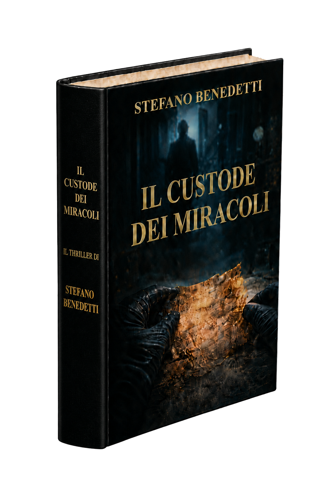

Thriller Storico
Suspense tra eventi reali e finzione narrativa.

Thriller storico tra mistero, Chiesa e segreti sepolti. Un viaggio tra ombre antiche, alleanze fragili e rivelazioni pericolose.
In un antico monastero italiano viene ritrovato un manoscritto creduto perduto da secoli. Da quel momento, studiosi e predatori invisibili si muovono verso lo stesso obiettivo: impossessarsi di una verità capace di cambiare ogni certezza.
Suspense tra eventi reali e finzione narrativa.
Intrighi nascosti nel cuore di antichi poteri.
Rivelazioni segrete, simboli e codici dimenticati.